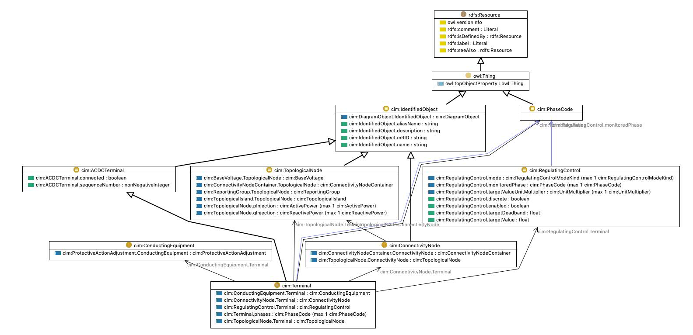

Model Representation#
Figure below shows an UML diagram for Terminal and ConnectivityNode in Common Information Model (CIM) which is used to connect terminals of
ac conducting equipment which is analogous to DistributionBus in grid data models. The CIM diagram is accessed from here.. Terminal class inherits from IdentifiedObject class which has name, description and mrid. IdentifiedObject.mrid is analogous to ComponentWithQuantities.uuid. Note in GDM we also have system_uuid to sort of manage which system these assets belong to. Also DistributionBus has coordinate attribute of type Location which is equivalent to PositionPoint in CIM.
GDM |
CIM |
Note |
|---|---|---|
|
|
Both of them are string. |
|
|
Unique identifier for the component. |
|
N/A |
System UUID to which this component belongs to. |
|
|
Note rated voltage is unit aware but BaseVoltage is not. |
|
|
x coordinate of the component. |
|
|
y coordinate of the component |
|
N/A |
Coordinate reference system for geo coordinates. |
|
N/A |
Differentiates from line to line voltage to line to ground voltage |
|
Name of the feeder to which this component belong to |
|
|
Name of the substation to which this component belongs to. |
|
|
|
List of phases. |
|
Limit type min or max |
|
|
Value for limit. |

Here is an UML diagram of DistributionBus from Grid data models.
classDiagram
class ComponentWithQuantities
ComponentWithQuantities: +name str
ComponentWithQuantities: +uuid UUID
ComponentWithQuantities: +system_uuid UUID | None
class PowerSystemBus
PowerSystemBus: +rated_voltage PositiveVoltage
PowerSystemBus: +coordinate Location | None
class Location
Location: +x float
Location: +y float
Location: +crs str | None
class DistributionBus
DistributionBus: +voltage_type VoltageTypes
DistributionBus: +belongs_to DistributionComponent | None
DistributionBus: +phases list[Phase]
DistributionBus: +voltagelimits list[VoltageLimitSet]
class VoltageTypes{
<<enumeration>>
LINE_TO_LINE
LINE_TO_GROUND
}
class DistributionComponent
DistributionComponent: +feeder str
DistributionComponent: +substation str
class Phase{
<<enumeration>>
A
B
C
N
s1
s2
}
class VoltageLimitSet
VoltageLimitSet: +limit_type LimitType
VoltageLimitSet: +value PositiveVoltage
class LimitType{
<<enumerations>>
MIN
MAX
}
PowerSystemBus --|> ComponentWithQuantities
Location --* PowerSystemBus
DistributionBus --|> PowerSystemBus
DistributionComponent <-- DistributionBus
VoltageLimitSet "0..*" --> "1" DistributionBus